En esta sección se muestra una instalación funcional de Kali Linux en un entorno de prácticas, desde el arranque inicial hasta la comprobación final del sistema instalado en modo UEFI. Además, se incluyen varias prácticas guiadas para empezar a trabajar con herramientas y técnicas básicas dentro de Kali.
Configuración de máquina Kali Linux
A continuación se muestran varias capturas del proceso de instalación de Kali Linux y de la comprobación final del sistema, confirmando que se ha instalado correctamente en un entorno preparado para arranque UEFI.
Inicio del proceso de instalación
En la primera imagen se puede ver el momento previo a la instalación de Kali. Desde aquí se selecciona el arranque del instalador y se inicia el proceso para desplegar el sistema operativo dentro de la máquina virtual o del entorno configurado.
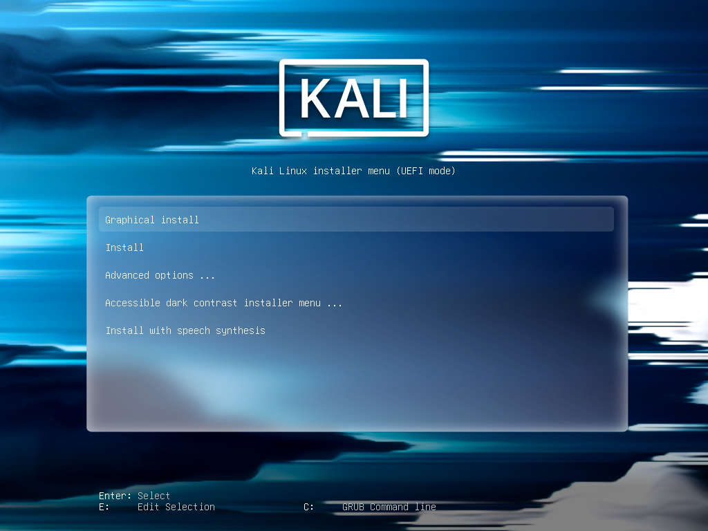
Instalación completada
Aquí se muestra el instante en el que la instalación ha finalizado correctamente, dejando el sistema listo para reiniciar y arrancar ya desde el disco configurado.
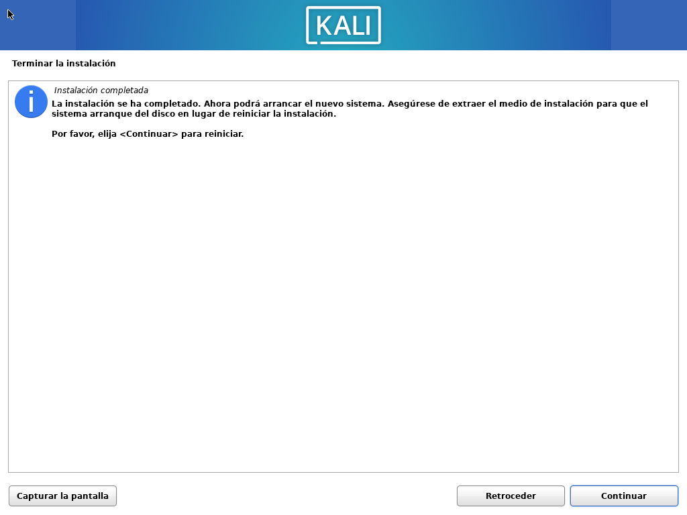
Comprobación del arranque en modo UEFI
En este punto, usando el comando ls /sys/firmware/efi, se confirma que Kali se ha instalado correctamente en modo UEFI. Esta verificación resulta útil porque demuestra que el sistema reconoce el entorno de arranque moderno y que la instalación se ha realizado de forma coherente con la configuración de la máquina.
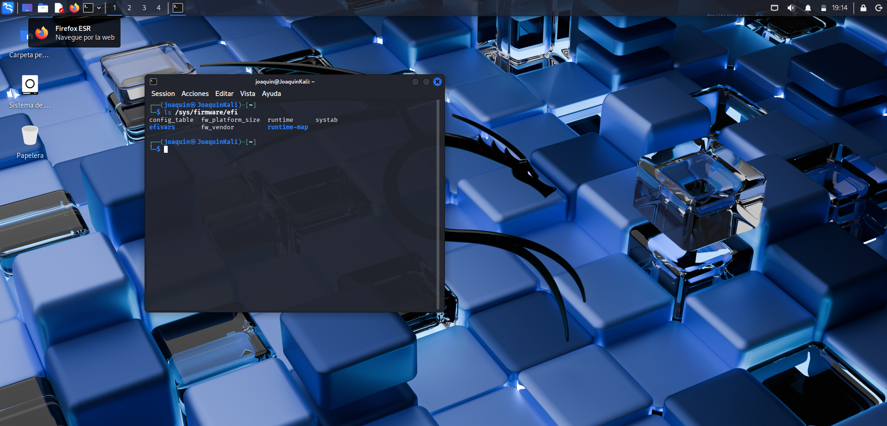
Resultado
Con estas capturas queda documentado un proceso de instalación correcto de Kali Linux, que termina con la comprobación de que el sistema funciona y arranca en modo UEFI, algo especialmente útil en entornos de prácticas y laboratorio.
Prácticas guiadas con Kali Linux
Una vez instalado y comprobado el sistema, esta parte reúne varios ejercicios sencillos para empezar a utilizar Kali Linux en un entorno controlado, de forma que sirvan como base antes de pasar a escenarios más completos.
Creación y automatización de una copia de seguridad local en Linux
Práctica guiada orientada a crear una copia de seguridad local sencilla en Linux y dejarla automatizada para que se ejecute de forma periódica sin intervención manual.
En esta práctica se aborda la creación y automatización de una copia de seguridad local en un sistema Linux, trabajando con el usuario joaquin dentro de Kali Linux. El objetivo principal ha sido aprender a proteger información básica de forma sencilla, utilizando herramientas nativas del sistema como mkdir, rsync, nano, chmod y cron. Para ello, primero se crea una carpeta de destino donde almacenar la copia, después se genera un script en Bash que automatiza el proceso de respaldo y, por último, se programa su ejecución automática mediante crontab. Este tipo de procedimiento resulta muy útil porque permite hacer copias de seguridad periódicas sin depender de intervención manual, reduciendo errores y ahorrando tiempo. Además, sirve como base para comprender cómo funcionan las tareas automatizadas en Linux y cómo se puede mejorar la seguridad y disponibilidad de los archivos personales.
Creación inicial de la carpeta de respaldo
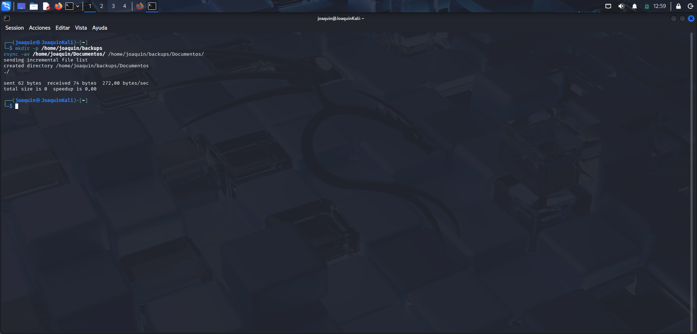
Creación de la carpeta de backup y primera prueba de copia con rsync.
En este paso se crea la carpeta donde se guardará la copia con el comando mkdir -p /home/joaquin/backups, que sirve para generar el directorio aunque todavía no exista. A continuación se ejecuta rsync -av /home/joaquin/Documentos/ /home/joaquin/backups/Documentos/, que copia el contenido de la carpeta Documentos al directorio de respaldo. La opción -a conserva estructura, permisos y fechas, mientras que -v muestra información detallada del proceso. El sistema indica que se ha creado /home/joaquin/backups/Documentos. También se observa total size is 0, lo que significa que la carpeta de origen estaba vacía en ese momento.
Creación del archivo backup.sh
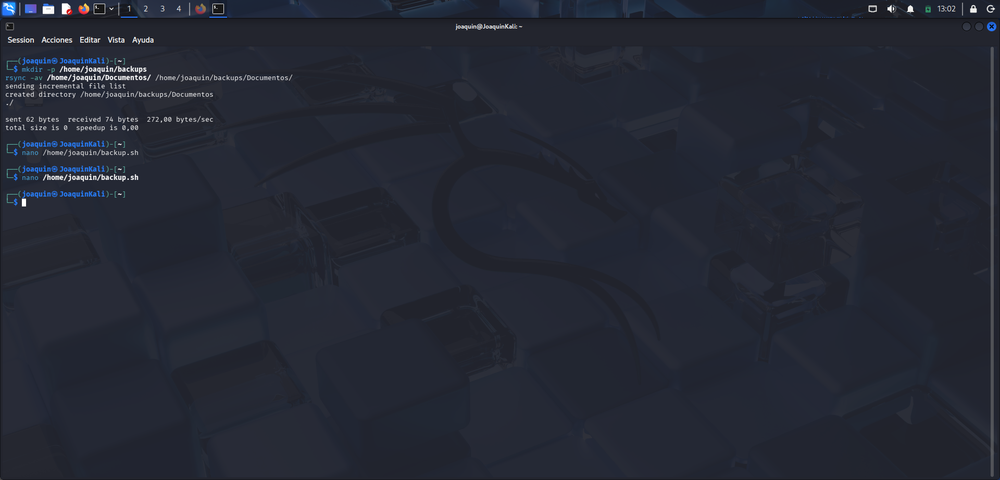
Apertura del archivo "backup.sh" con Nano para comenzar a escribir el script de copia de seguridad.
En este momento se utiliza el comando nano /home/joaquin/backup.sh, que sirve para abrir el editor de texto Nano y crear o modificar el archivo backup.sh. Este archivo contendrá las instrucciones necesarias para automatizar la copia de seguridad. Al guardarlo dentro de la carpeta personal del usuario joaquin, se evita trabajar en rutas con posibles problemas de permisos. Este paso es importante porque permite pasar de comandos escritos manualmente a un script reutilizable. A continuación, dentro de Nano, se introducirán las órdenes necesarias para crear la carpeta de backup y ejecutar la copia con rsync.
Escritura del contenido del script
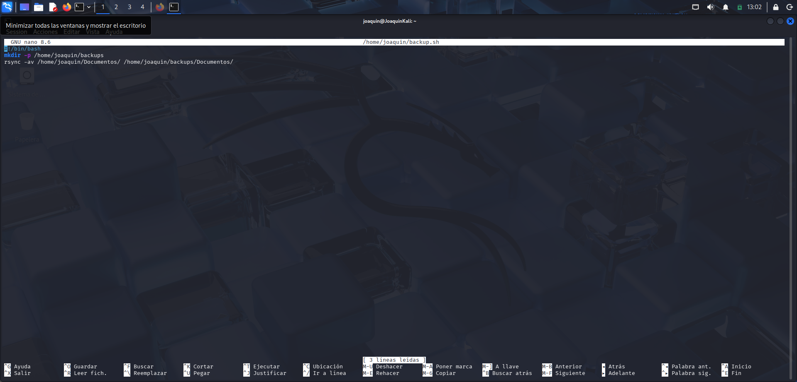
Escritura del contenido del script "backup.sh" dentro del editor Nano.
Aquí ya se ha abierto el editor con nano /home/joaquin/backup.sh y se está escribiendo el contenido del script. La primera línea, #!/bin/bash, indica que el archivo se ejecutará con el intérprete Bash. Después aparece mkdir -p /home/joaquin/backups, que crea la carpeta de destino si no existe. Por último, rsync -av /home/joaquin/Documentos/ /home/joaquin/backups/Documentos/ copia el contenido de la carpeta Documentos al directorio de respaldo. Este paso es importante porque deja preparada la automatización en un único archivo ejecutable.
Permiso de ejecución y primera prueba
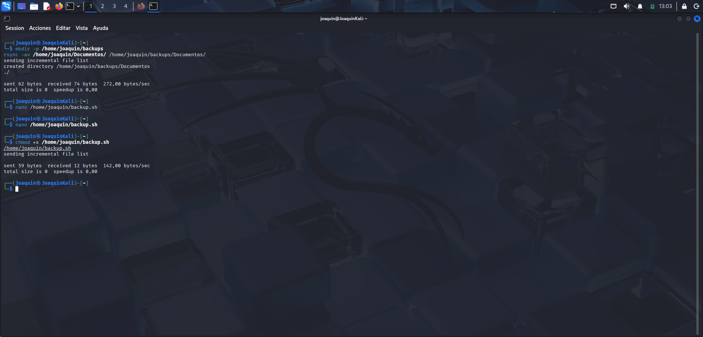
Permiso de ejecución del script y primera prueba de funcionamiento.
En esta fase se ejecuta chmod +x /home/joaquin/backup.sh, que sirve para dar permiso de ejecución al archivo y convertirlo en un script ejecutable. Después se lanza /home/joaquin/backup.sh, que ejecuta automáticamente los comandos escritos en el fichero. El sistema vuelve a mostrar la salida de rsync, señal de que el script ha funcionado. Como sigue apareciendo total size is 0, se confirma que el origen aún no contenía archivos para copiar. Aun así, esta prueba demuestra que el script estaba bien creado y era funcional.
Prueba real del backup con un archivo
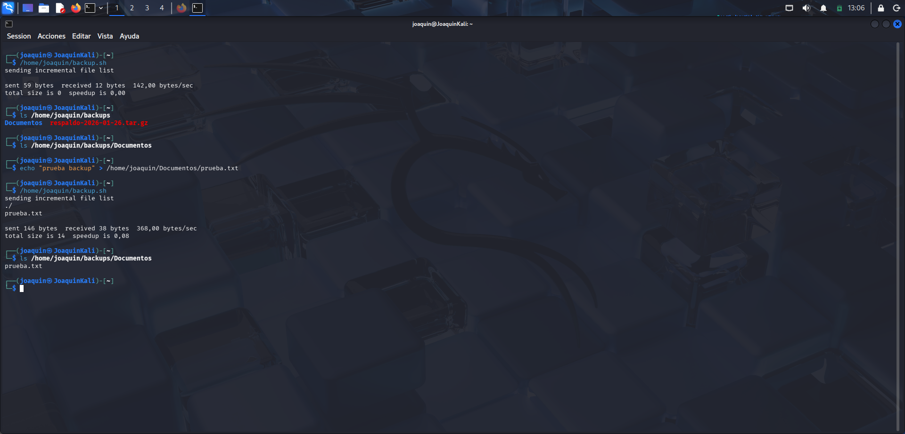
Comprobación práctica del backup mediante la creación y copia de un archivo de prueba.
Primero se consulta el contenido del directorio de backup con ls /home/joaquin/backups y ls /home/joaquin/backups/Documentos, donde se comprueba que la carpeta existe pero está vacía. Después se crea un archivo real con echo 'prueba backup' > /home/joaquin/Documentos/prueba.txt, comando que escribe el texto indicado dentro de prueba.txt. A continuación se vuelve a ejecutar /home/joaquin/backup.sh para repetir la copia. Esta vez rsync detecta y copia el archivo nuevo. Finalmente, con ls /home/joaquin/backups/Documentos se comprueba que prueba.txt ya está en la copia de seguridad.
Programación del script con crontab
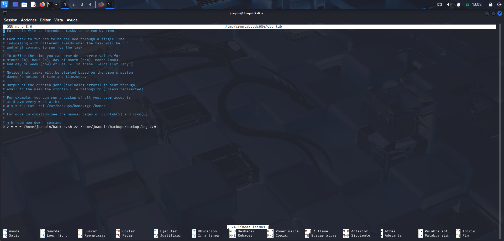
Edición de crontab para programar la ejecución automática del script de backup.
En esta parte se abre el archivo de tareas programadas del usuario con crontab -e, que sirve para editar el cron personal. Dentro de este archivo se añade la línea 0 2 * * * /home/joaquin/backup.sh >> /home/joaquin/backups/backup.log 2>&1, que programa la ejecución automática del script todos los días a las 02:00. La parte >> /home/joaquin/backups/backup.log guarda la salida del proceso en un archivo de log. La expresión 2>&1 redirige también los posibles errores al mismo archivo, para que toda la información quede registrada. Este paso permite automatizar la copia de seguridad sin necesidad de lanzarla manualmente cada día.
Confirmación de instalación del cron
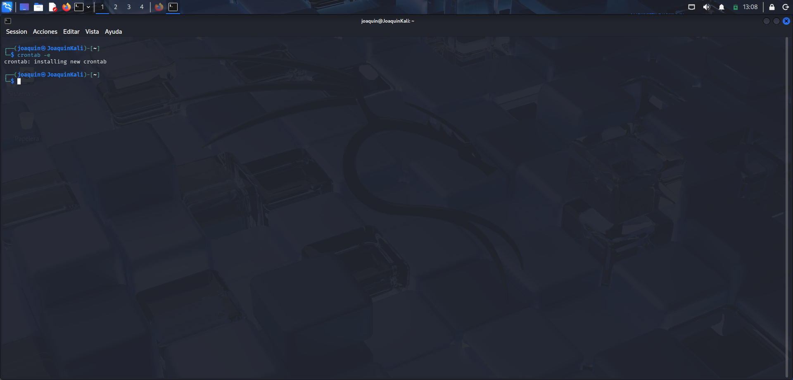
Confirmación de que la nueva tarea de cron se ha guardado e instalado correctamente.
Aquí se observa el mensaje generado después de guardar el archivo editado con crontab -e. El texto crontab: installing new crontab confirma que la nueva programación se ha instalado correctamente en el sistema. Esto significa que cron ya reconoce la tarea y la ejecutará en la hora indicada. Es un paso importante porque valida que la configuración no tiene errores de formato y que ha quedado registrada para el usuario joaquin. A partir de este momento, el script ya puede ejecutarse de forma automática.
Revisión del contenido de crontab
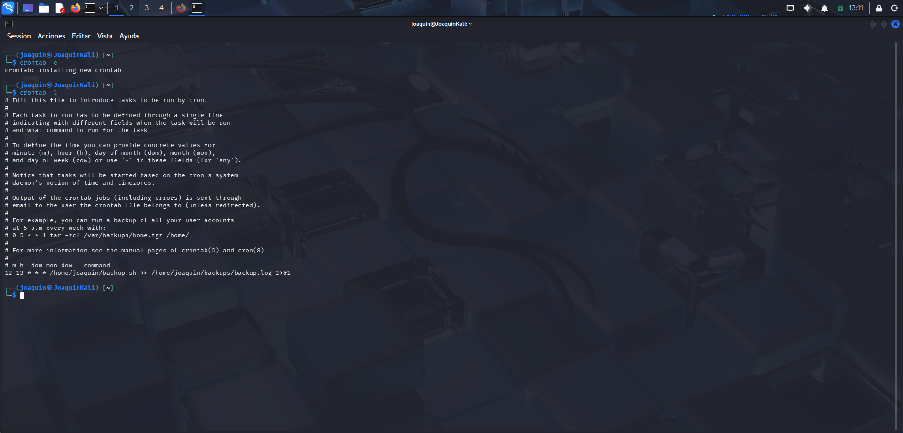
Comprobación del contenido de crontab para verificar la tarea programada.
En esta imagen se utiliza el comando crontab -l, que sirve para mostrar en pantalla las tareas programadas activas del usuario. Gracias a esta comprobación se puede revisar que la línea del cron se ha guardado bien y que apunta al script correcto, /home/joaquin/backup.sh. También se verifica que la salida se redirige al archivo /home/joaquin/backups/backup.log. Este paso resulta útil para confirmar la configuración sin necesidad de volver a abrir el editor. Así se comprueba que la automatización ha quedado definida correctamente antes de hacer la prueba de ejecución.
Verificación final del log y del backup
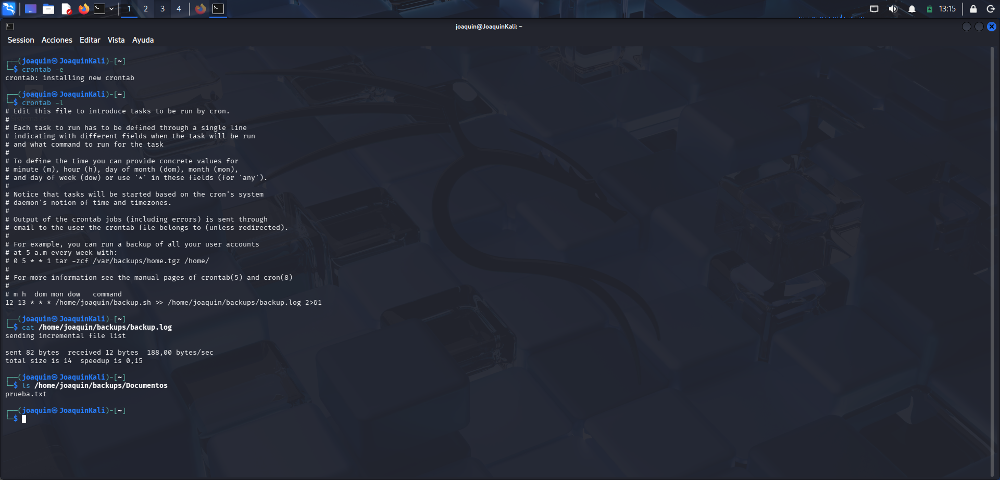
Verificación final del log y de la copia de seguridad realizada automáticamente por cron.
Para terminar, se consulta primero el archivo de registro con cat /home/joaquin/backups/backup.log, comando que muestra el contenido completo del log generado por la ejecución automática del script. La salida confirma que rsync se ha ejecutado, ya que aparece la información de transferencia del archivo. Después se usa ls /home/joaquin/backups/Documentos, que sirve para listar el contenido de la carpeta de respaldo. En el resultado aparece prueba.txt, lo que demuestra que el archivo de prueba se ha copiado correctamente mediante la tarea programada. Esta es la validación final de que tanto el script como el cron funcionan bien.
Conclusión
Como conclusión, esta práctica ha permitido comprobar de forma real cómo crear un sistema básico de backup automatizado en Linux. A través del uso de rsync se ha conseguido copiar el contenido de una carpeta a otra ubicación, mientras que con un script en Bash se ha simplificado la tarea para poder reutilizarla fácilmente. Finalmente, gracias a cron, el proceso ha quedado programado para ejecutarse de forma automática a una hora determinada. Este tipo de solución resulta muy útil para mantener copias de seguridad actualizadas de documentos importantes, configuraciones o archivos de trabajo. Aunque en este caso se ha realizado en una carpeta local, el mismo procedimiento puede ampliarse más adelante a discos externos, otros equipos en red o sistemas de copia más avanzados.
Abrir un servicio y descubrirlo con Nmap
Práctica guiada centrada en levantar un servicio local, comprobar que está activo y verificar su detección mediante Nmap.
En esta práctica se muestra un ejemplo sencillo de cómo abrir un servicio en un sistema Linux y comprobar su detección con nmap. La idea es ver de forma clara cómo cambia el estado de un puerto cuando un servicio está activo y cómo una herramienta de escaneo permite identificarlo desde la propia máquina. Para ello, primero se arranca el servidor Apache, después se verifica su presencia con un escaneo de versiones y, por último, se detiene para confirmar que deja de aparecer como servicio disponible. Es una práctica muy útil para entender la relación entre procesos, puertos abiertos y herramientas de reconocimiento.
Arranque del servicio Apache
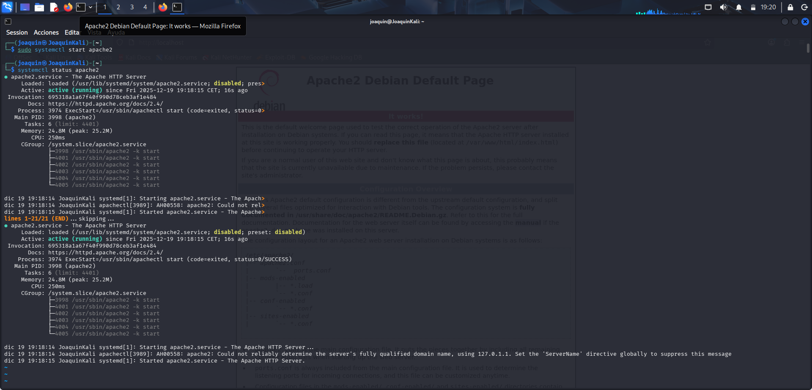
Inicio del servicio Apache y comprobación de que ha quedado activo.
En este paso se abre un servidor Apache utilizando el comando sudo systemctl start apache2. Después se comprueba que el servicio está funcionando con systemctl status apache2. Este paso permite verificar que Apache se ha arrancado correctamente y que el sistema lo reconoce como un servicio activo antes de realizar cualquier escaneo.
Detección del servicio con Nmap
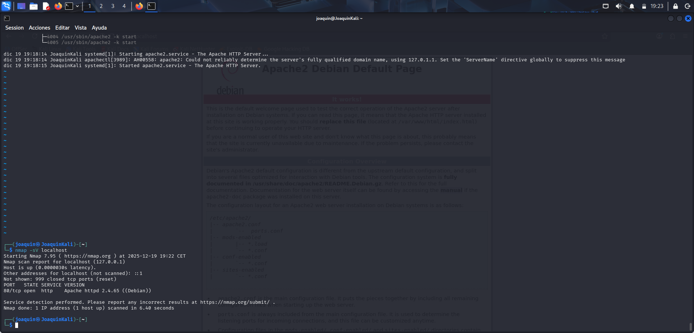
Comprobación con Nmap de que el servicio está abierto y funcionando.
Después se ejecuta nmap -sV localhost para comprobar si Apache está funcionando. La opción -sV intenta identificar la versión del servicio detectado, mientras que localhost indica que el escaneo se realiza sobre la propia máquina. El resultado muestra el estado open, lo que confirma que el puerto asociado al servicio está accesible y que Apache está efectivamente activo.
Detención del servicio y nueva comprobación
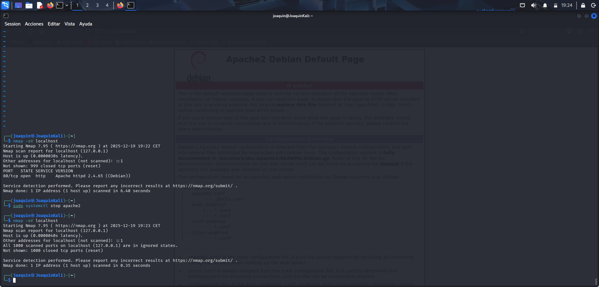
Parada del servicio Apache y verificación de que ya no aparece como activo.
Para finalizar, se detiene Apache con sudo systemctl stop apache2 y se vuelve a comprobar el resultado con nmap -sV localhost. Esta última comprobación sirve para confirmar que, una vez parado el servicio, el puerto deja de aparecer como abierto o ya no se identifica el servicio correspondiente. Con ello se cierra la práctica mostrando de forma clara cómo Nmap refleja el estado real del sistema según los servicios que estén activos en cada momento.
Conclusión
Esta práctica permite entender de forma muy visual cómo se relacionan los servicios activos de un sistema con los puertos que aparecen durante un escaneo. Al arrancar Apache, se comprueba que el servicio queda disponible y detectable; al detenerlo, se confirma que deja de estar expuesto. Es un ejemplo muy útil para familiarizarse con systemctl, con el funcionamiento básico de nmap y con la lógica de la enumeración de servicios en un entorno Linux.
Ver contraseñas en texto plano con Wireshark
Práctica guiada orientada a comprobar cómo un protocolo no cifrado como FTP puede exponer credenciales en la red, y a compararlo con el comportamiento de SSH.
En esta práctica se realiza una comprobación muy visual de cómo se pueden ver credenciales en texto plano cuando se utiliza un protocolo que no cifra la comunicación. Para ello se trabaja con Wireshark como herramienta de captura de tráfico y con FTP como servicio de prueba. Después, para comparar, se repite una conexión usando SSH, que sí cifra la información. De esta forma se puede observar claramente la diferencia entre un protocolo inseguro y otro diseñado para proteger los datos transmitidos por la red.
Instalación y activación del servicio FTP
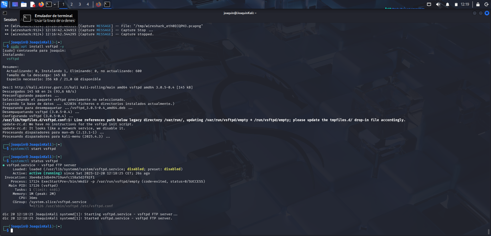
Instalación del servidor FTP y comprobación de que el servicio ha quedado activo.
En este laboratorio se realiza una prueba para comprobar cómo pueden verse las credenciales de un usuario a través de Wireshark cuando se utiliza FTP, un protocolo que no cifra la comunicación. Por eso, lo primero que se hace es instalar el servicio con sudo apt install vsftpd -y y arrancarlo mediante sudo systemctl start vsftpd. Después se comprueba su estado con systemctl status vsftpd. Al visualizar el estado running, se verifica que el servicio se ha iniciado correctamente.
Creación de un usuario de prueba
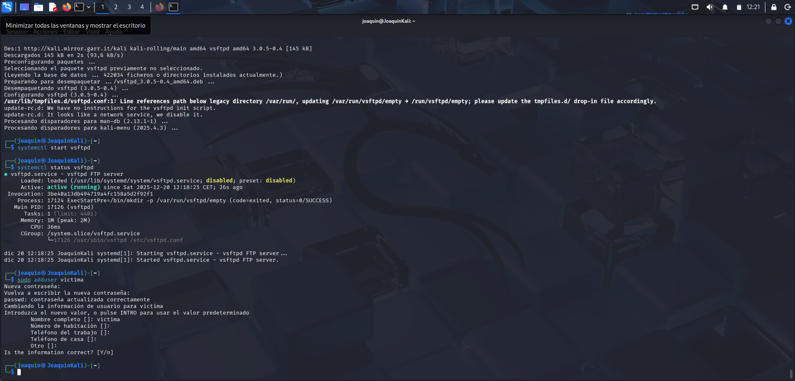
Creación de un usuario de prueba para realizar la conexión FTP y observar sus credenciales en la red.
Para comprobar la exposición de credenciales, se crea un usuario específico de prueba. En este caso se utiliza el nombre víctima y se crea con el comando sudo adduser víctima. Este paso permite disponer de una cuenta real sobre la que hacer la conexión, de forma que el tráfico capturado por Wireshark sea representativo y se pueda analizar después con claridad.
Conexión por FTP con el usuario creado
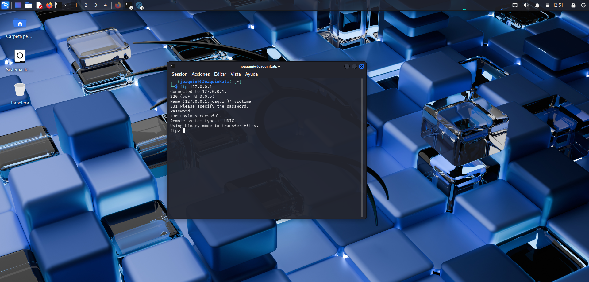
Inicio de sesión por FTP con el usuario de prueba creado anteriormente.
En esta fase se establece la conexión vía FTP con el usuario que se había creado previamente. Este paso es importante porque genera el tráfico necesario para que Wireshark pueda capturar el intercambio entre cliente y servidor. Como FTP no cifra las credenciales, esta conexión servirá después para comprobar si el nombre de usuario y la contraseña pueden verse directamente dentro de los paquetes.
Captura de la conexión en Wireshark
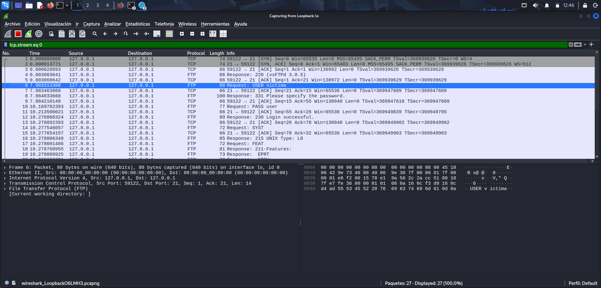
Visualización en Wireshark de la conexión FTP realizada correctamente.
En Wireshark aparece la conexión capturada, lo que confirma que el tráfico generado por la sesión FTP se ha registrado correctamente. Esta fase permite localizar la conversación entre cliente y servidor y preparar el análisis de los paquetes concretos relacionados con la autenticación. Al tratarse de un protocolo sin cifrado, esta revisión tiene especial interés porque la información sensible puede quedar visible tal y como fue enviada.
Visualización de la contraseña en texto plano
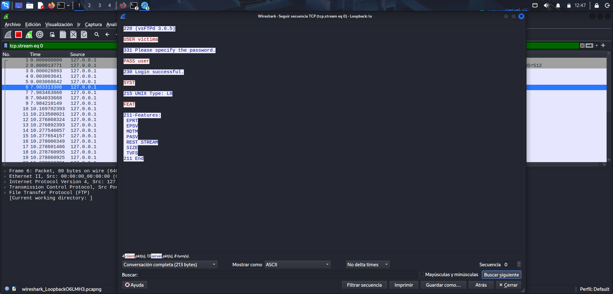
Identificación dentro del tráfico FTP del usuario y la contraseña enviados sin cifrado.
Al pulsar sobre el servicio dentro de Wireshark y revisar el contenido del intercambio, se puede ver la contraseña enviada en texto plano. En este caso, la práctica permite observar de forma directa que FTP no protege las credenciales durante la autenticación. Ese es precisamente el objetivo del ejercicio: demostrar por qué no conviene utilizar protocolos inseguros para transmitir información sensible.
Inicio de la comparación con SSH
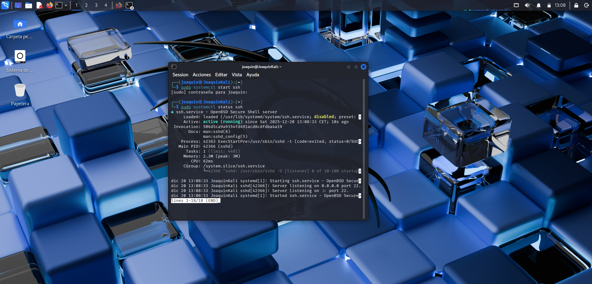
Activación de la comparación usando SSH como protocolo cifrado.
Para comprobar la diferencia con SSH, que sí va cifrado, se repite una prueba similar. En esta fase se activa el servicio correspondiente y se inicia sesión con el usuario víctima. La idea es generar tráfico comparable al de FTP, pero usando un protocolo diseñado para proteger la información intercambiada entre cliente y servidor.
Captura del tráfico SSH en Wireshark
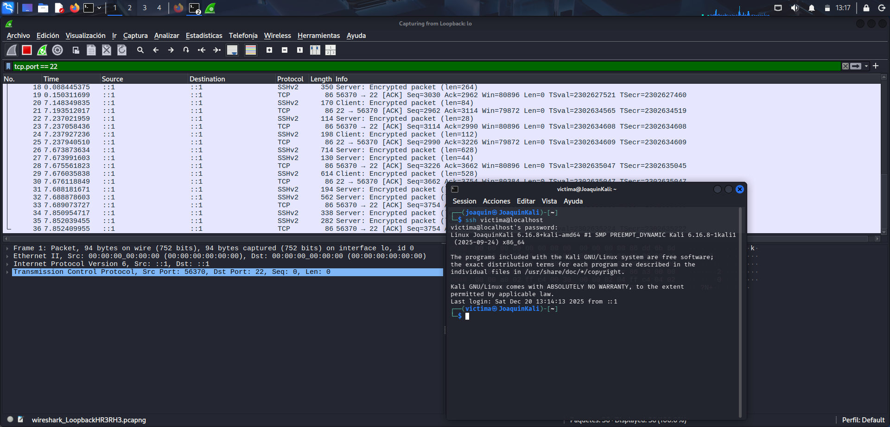
Visualización de los paquetes de la sesión SSH dentro de Wireshark.
En este punto se ve que los paquetes de la conexión SSH aparecen correctamente en Wireshark, igual que ocurría antes con FTP. Es decir, el tráfico se captura sin problema y puede analizarse desde la herramienta. Sin embargo, la diferencia importante no está en si los paquetes existen o no, sino en el contenido que transportan.
Comprobación de que SSH protege las credenciales
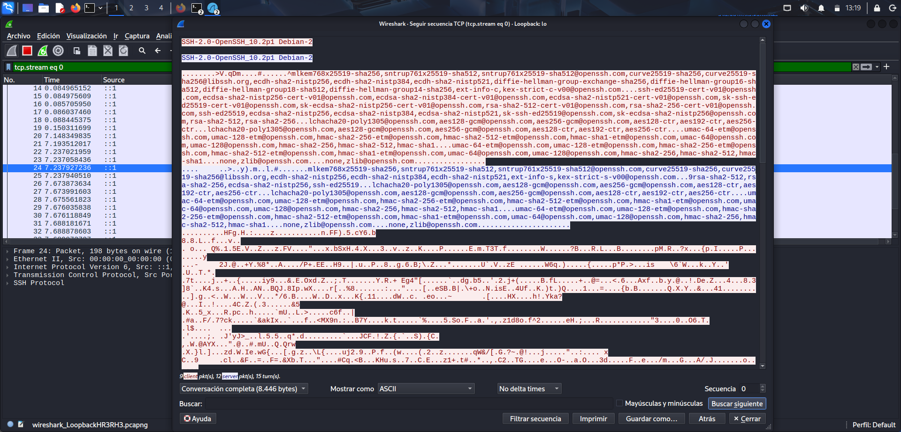
Verificación de que en SSH no se muestran las credenciales en texto plano.
Finalmente, se comprueba que en la conexión SSH no aparecen los datos de autenticación en texto plano. Aunque la sesión y sus paquetes sean visibles en la captura, la información sensible va cifrada y no puede leerse directamente como ocurría con FTP. Esta comparación deja muy clara la diferencia entre un protocolo inseguro y uno seguro, y refuerza la importancia de utilizar servicios cifrados siempre que se manejen usuarios, contraseñas o cualquier otro dato sensible.
Conclusión
Esta práctica permite comprobar de forma muy clara por qué FTP no es adecuado cuando se quiere proteger información sensible. Mientras que en FTP las credenciales pueden aparecer directamente en la captura, en SSH los paquetes siguen existiendo pero su contenido ya no resulta legible porque va cifrado. Es una comparación muy útil para entender la importancia del cifrado en protocolos de red y para ver, de forma práctica, cómo Wireshark puede ayudar a analizar el comportamiento de distintos servicios dentro de un entorno controlado.
Cracking de contraseñas
Práctica guiada orientada a comprobar cómo la baja complejidad de una contraseña facilita su recuperación a partir de un hash usando un ataque de diccionario.
En esta práctica se realiza una demostración sencilla de cracking de contraseñas a partir de un hash SHA-256 utilizando John the Ripper. La idea es mostrar cómo una contraseña débil puede recuperarse si se compara contra un diccionario conocido. Para ello, primero se genera el hash de una contraseña de ejemplo, después se guarda en un archivo de texto y, por último, se utiliza un diccionario popular para intentar resolverlo. Es una práctica muy útil para entender por qué no basta con almacenar contraseñas en forma de hash si además se eligen claves demasiado simples.
Generación del hash SHA-256
Creación del hash SHA-256 de una contraseña sencilla para preparar la práctica.
En esta práctica se realiza una prueba para recuperar una contraseña mediante un ataque de diccionario sobre un hash SHA-256 con John the Ripper, logrando obtenerla debido a su baja complejidad. En esta captura se genera el hash a propósito ejecutando el comando echo -n "password123" | sha256sum. La opción -n evita añadir un salto de línea al texto, lo que permite obtener el hash exacto de la contraseña sin caracteres extra. Con este paso se prepara la base de la práctica: un hash real sobre el que después se intentará recuperar la clave original.
Guardado del hash en un archivo
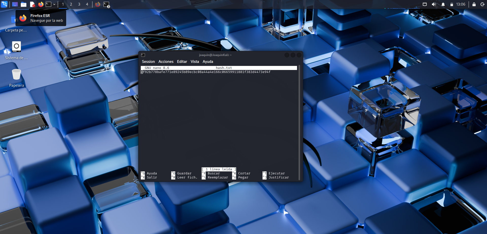
Copia del hash en un archivo de texto para poder trabajarlo con la herramienta de cracking.
Aquí se copia el hash obtenido anteriormente dentro de un archivo .txt. Este paso es importante porque herramientas como John the Ripper necesitan leer el hash desde un fichero para poder compararlo con las palabras del diccionario. De este modo, el hash queda preparado en un formato sencillo y reutilizable para realizar la prueba de cracking.
Ataque de diccionario con John the Ripper
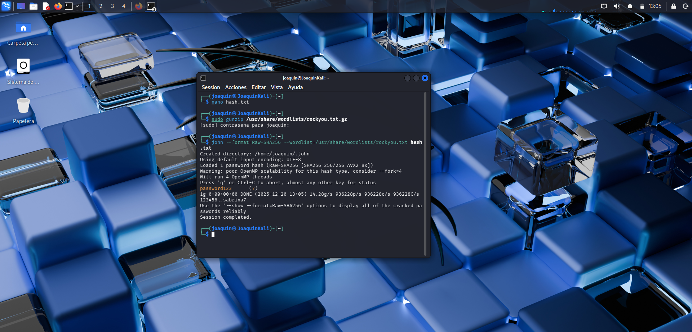
Uso del diccionario rockyou y de John the Ripper para recuperar la contraseña a partir del hash.
Por último, se utiliza el diccionario ejecutando primero sudo gunzip /usr/share/wordlists/rockyou.txt.gz para descomprimir el archivo de palabras, y después john --format=Raw-SHA256 --wordlist=/usr/share/wordlists/rockyou.txt hash.txt para intentar recuperar la contraseña. La opción --format=Raw-SHA256 indica el tipo de hash que se está utilizando, mientras que --wordlist especifica el diccionario con el que se harán las pruebas. El resultado permite recuperar la contraseña original, demostrando que una clave simple como password123 puede resolverse con facilidad si aparece en un diccionario conocido.
Conclusión
Esta práctica permite ver de forma muy clara por qué una contraseña débil sigue siendo un problema incluso cuando se almacena como hash. Si la clave es predecible o forma parte de un diccionario conocido, herramientas como John the Ripper pueden recuperarla en muy poco tiempo. El ejercicio sirve para reforzar una idea básica de seguridad: no solo importa cómo se almacenan las contraseñas, sino también la calidad de las propias claves elegidas.